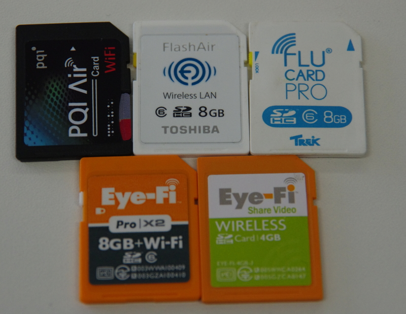
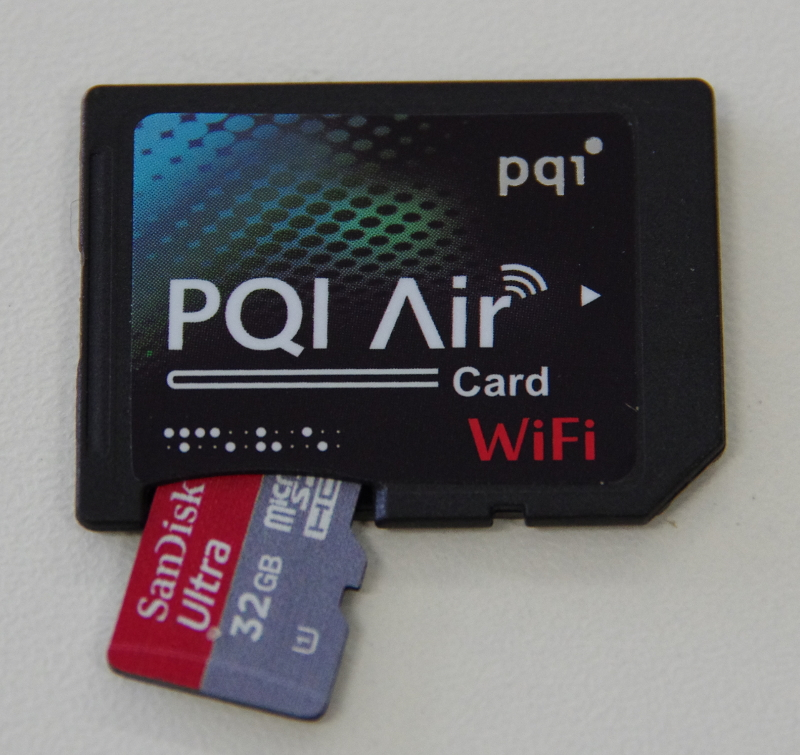

10月のオフな集まり(第123回)
独立行政法人情報処理推進機構(IPA)会議室A
KenichiroMATOHARA(@matoken)
http://matoken.org/
今回のネタ
- PQI AirCard を試す
- Amazon Glacier で遠隔backup
PQI AirCard
- SD-Wifi Card
- 無線LAN の付いたSD Card
- PC やカメラからは普通のSD Card に見える
- Wifi 経由で写真の取り込みが出来る
- 似た製品にEye-fi / TREK FluCard / Tosiba FlashAir などがある
写真

写真

類似製品との違い
- Eye-Fi
- 基本的に全部アップ
- TREK FluCard / Tosiba FlashAir
- 一枚ずつ選択してダウンロード
- ブラウザからもアクセス可能
PQI AirCard
- 10/1 発売，秋葉原では9/29 には売られていた
- TREK FluCard / Tosiba FlashAir に似ている
- 設定変更もブラウザから出来る
- ストレージは内蔵されていない，microSD を挿して使う
- 各種メディア対応(音楽，動画など)
対応フォーマット

使い勝手
- iOS アプリ
- 前もってCard のAP に繋いでおく必要がある(面倒)
- 写真ダウンロードにプログレスがでないので不安
- アップロードにはプログレスが出る
- Android アプリ
- Android 版は手元ではうまく動かない?
- ブラウザ
- 一通りの設定はブラウザだけで出来る
- 写真の一覧画面は全ての写真が表示されるので多くなると大変
- ダウンロードアンカがあるのは良い
使い勝手比較
- Eye-fi -> 安定，基本全部Upload
- Toshoba FlashAir -> Card に直アクセス，フォルダ単位に表示されるので単体DL が楽．
- PQI Air Card -> 選択したものをUp/Down/写真以外のメディアもOK
- Flucard(G2) -> 地雷
速度確認(サンディスク® モバイル ウルトラ™ microSDHC™ UHS-I カード 32GB)
*PQI Air card 経由
Timing buffered disk reads: 52 MB in 3.10 seconds = 16.77 MB/sec
- 付属SD アダプタ経由
Timing buffered disk reads: 74 MB in 3.05 seconds = 24.23 MB/sec
- 直接続
Timing buffered disk reads: 72 MB in 3.02 seconds = 23.86 MB/sec
- 少しボトルネックになっている
まとめ
- 今のところ全機能ブラウザだけで使える -> Linux でも♪
- FW Update がどうなるか…
- 写真が増えてくると少し面倒
- スマートフォンアプリンはいまいち
- これからに期待
- ストレージ領域が別なのでストレージが壊れても交換できる
- Eye-fi Pro x2 は一度ストレージ部分が壊れて買い換えたこと有り…
- 安い(単体で\3,980)
Amazon Glacier をかじる
- Amazon Glacier?
- AWS のオンラインストレージサービス
- 月1GB で$0.01 位のサービス
- 容量は無制限(1Vault 40T, Vaultは幾つでも)
- アップロードは無料
- Region は5箇所選択可能(Regionにより少し値段が違う)
- 復元には復元リクエストを投げてから数時間必要&容量に応じて別料金が発生
利用の流れ
- AWS 申し込み
- AWS のWebConsole で希望Region にVault 作成(フォルダみたいな)
- Vault にデータアップロード
- この時ArchiveID が帰ってくる
- 要らなくなったVault 削除
- データが飛んだらリクエストを投げてDL
データアップロードプログラム
- 自分でプログラムを書く必要がある
- SDK は今のところ.NET / Java のみ
- とりあえずJava のサンプルをいじってどうにか
- PogoPlug も対応しているらしい?
自動的にデータアップロードしたい
- デイリーでバックアップ
- アーカイブにして
- 暗号化してアップロード
- 通信はhttps/格納はAES256 らしいけどAmazon は復号できる
Ubuntu とかだとバックアップソフトがあるよね
- Deja Dup を使うとバックアップ，アーカイブ，暗号化をやってくれて楽
- でも…
- キャッシュがでかくなる(256GBのストレージに20GB 超のキャッシュが)
- 復元に失敗したことがある
- ということで自分でscript を書くことに
毎日のバックアップ
$ rsync -avvce 'ssh -p 2222 -i /home/mk/.ssh/backup2micro' --delete --exclude-from=/home/mk/denylist --link-dest=192.168.1.102:/export/data/backup/x201s/rsync/home/`/bin/date -d '1 day ago' +\%Y\%m\%d`/ /home/mk 192.168.1.102:/export/data/backup/x201s/rsync/home/`/bin/date +\%Y\%m\%d`/
* rsync の--link-dest で前日との差分の実体だけをバックアップ他のファイルはハードリンクで見た目毎日フルバックアップ
圧縮
$ tar cf - /export/data/backup/x201s/rsync/home/`date +\%Y\%m\%d` | xz -9 > /export/data/backup/x201s/rsync/home/x201s-home-`date +\%Y\%m\%d`.tar.xz
- 容量が少なければ安くなるので
xz -9で圧縮
暗号化
$ gpg -e -r BD929CA7 /export/data/backup/x201s/rsync/home/x201s-home-20121012.tar.xz
- 自分の鍵で暗号化
アップロード
$ time java -jar ~/GlacierUp.jar https://glacier.us-west-2.amazonaws.com/ x201s /export/data/backup/x201s/rsync/home/x201s-home-20121012.tar.xz.gpg
https://glacier.us-west-2.amazonaws.com/,x201s,/export/data/backup/x201s/rsync/home/x201s-home-20121012.tar.xz.gpg,feTQn94CsSH3EL3O3MFjBwj69lRCvhTSmknxW9YJxhGSv0SAjxCxzVRcun7iCdHfdk7OjkKg5I_vodkIopUm7iP9BcqxuWMuyJ2RCXMP31WjOW_S0Fejn0hqoQ2MnYnHvwQh9AWOgQ
real 19m43.371s
user 3m49.422s
sys 0m17.349s
容量
$ ls -l /export/data/backup/x201s/rsync/home/x201s-home-20121012.tar.xz
-rw-rw-r-- 1 mk mk 3471811192 10月 12 19:57 /export/data/backup/x201s/rsync/home/x201s-home-20121012.tar.xz
- 3.5GB で20分ほど
未確認
- アーカイブはハードリンクのもの(差分のみ)
- 月一とかにフルバックアップをしたい
- tar のオプションである?
- 古いアーカイブの削除処理
- 復元プログラムを作らなきゃ
- アーカイブID の管理
おまけ
- AWS の認証にはトークンが利用可能
- Googleの2段階認証のソフトウェア生成器も使える
- Amazon.com で売っているGemalto のハードウェア生成器も使える